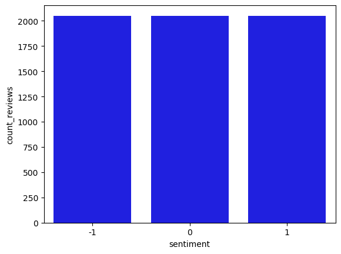

import boto3
import sagemaker
import botocore
config = botocore.config.Config(user_agent_extra='dlai-pds/c2/w1')
# low-level service client of the boto3 session
sm = boto3.client(service_name='sagemaker',
config=config)
featurestore_runtime = boto3.client(service_name='sagemaker-featurestore-runtime',
config=config)
sess = sagemaker.Session(sagemaker_client=sm,
sagemaker_featurestore_runtime_client=featurestore_runtime)
bucket = sess.default_bucket()
role = sagemaker.get_execution_role()
region = sess.boto_region_name1 Introduction
In earlier articles we introduced AWS cloud services for data science, and showed how it can help with different stages of the data science & machine learning workflow.

In this article we will look at the Prepare & Transform stage using AWS including:
- Feature engineering
- Feature store
Using the raw Women’s Clothing Reviews dataset - we will prepare it to train a BERT-based natural language processing (NLP) model. The model will be used to classify customer reviews into positive (1), neutral (0) and negative (-1) sentiment.
We will convert the original review text into machine-readable features used by BERT. To perform the required feature transformation we will configure an Amazon SageMaker processing job, which will be running a custom Python script.
2 The Bert language model
BERT stands for ‘Bidirectional Encoder Representations from Transformers’. So Bert language models are based on the transformer type models first created in 2017.

In a previous article we used a Blazing Text Language Model to create a text classifier. Blazing Text language models are in turn based on Word2Vec type language models. But how do word2vec/Blazing text language models work? essentially these models convert individual words into a series of numbers or a vector.

I used word2vec in one of my first data science/deep learning projects back in 2019 classifying disaster text messages.
This means with word2vec similar meaning words will have similar numbers and vector positions, this is what this language model learns. The downside of this approach though is it allows only for one sense of what a word might mean - but we know in practice the meaning of a word can be effected by the context.
For example, if we were trying to decide if these two phrases were positive or negative:
- I love the dress
- I love the dress, but not the price
A word2vec model might end up giving quite positive sentiment to both of these phrases when summing up the meaning of these words individually, yet we can see that the second phrase might have more neutral if not negative sentiment, because here ‘love’, usually positive, has been modified by the context of the words its within.
This is one key thing that transformer models such as BERT or GPT can do, they can take into account the context of a word, and indeed process an entire phrase in one go to give a vector for that group of words, rather than for one word at a time.

In particular transformers use attention to capture the relationship and meaning between words used together. You can find out more about the differences between word2vec and transformer models here.
3 Feature Engineering at Scale
Amazon SageMaker processing allows you to perform data related tasks such as, preprocessing, postprocessing, and model evaluation at scale. SageMaker processing provides this capability by using a distributed cluster. By specifying some parameters, you can control how many notes and the type of the notes that make up the distributed cluster.

Sagemaker Feature Store is a fully managed service that provides purpose-built feature store. SageMaker Feature Store provides you with a centralized repository to securely save and serve features from.
Next, SageMaker Feature Store provides you with the capabilities to reuse the features, not just across a single machine learning project, but across multiple projects. A typical challenge that data scientist sees is training an inference skew that could result from discrepancies in the data used for training and the data used for inferencing. Sagemaker Feature Store helps reduce the skew by reusing the features across training and inference traces and by keeping the features consistent.
Finally, SageMaker Feature Store provides the capabilities to create it for the features both in real time and batch. The ability to creating for features in real time suppose use cases such as near real time ML predictions. Similarly, the ability to look up features in batch mode can be used to support use cases, such as model training.

4 Import Libraries & Initialise
5 Configure the SageMaker Feature Store
5.1 Configure dataset
The raw dataset is in the public S3 bucket. Let’s start by specifying the S3 location of it:
raw_input_data_s3_uri = 's3://dlai-practical-data-science/data/raw/'
print(raw_input_data_s3_uri)s3://dlai-practical-data-science/data/raw/List the files in the S3 bucket (in this case it will be just one file):
!aws s3 ls $raw_input_data_s3_uri2021-04-30 02:21:06 8457214 womens_clothing_ecommerce_reviews.csv5.2 Configure the SageMaker feature store
As the result of the transformation, in addition to generating files in S3 bucket, we will also save the transformed data in the Amazon SageMaker Feature Store to be used by others in our organization, for example.
To configure a Feature Store we need to setup a Feature Group. This is the main resource containing all of the metadata related to the data stored in the Feature Store.
A Feature Group should contain a list of Feature Definitions. A Feature Definition consists of a name and the data type. The Feature Group also contains an online store configuration and an offline store configuration controlling where the data is stored. Enabling the online store allows quick access to the latest value for a record via the GetRecord API. The offline store allows storage of the data in your S3 bucket. We will be using the offline store here.
Let’s setup the Feature Group name and the Feature Store offline prefix in S3 bucket.
import time
timestamp = int(time.time())
feature_group_name = 'reviews-feature-group-' + str(timestamp)
feature_store_offline_prefix = 'reviews-feature-store-' + str(timestamp)
print('Feature group name: {}'.format(feature_group_name))
print('Feature store offline prefix in S3: {}'.format(feature_store_offline_prefix))Feature group name: reviews-feature-group-1675799708
Feature store offline prefix in S3: reviews-feature-store-1675799708Taking two features from the original raw dataset (Review Text and Rating), we will transform it preparing to be used for the model training and then to be saved in the Feature Store. Here we will define the related features to be stored as a list of FeatureDefinition.
from sagemaker.feature_store.feature_definition import (
FeatureDefinition,
FeatureTypeEnum,
)
feature_definitions= [
# unique ID of the review
FeatureDefinition(feature_name='review_id', feature_type=FeatureTypeEnum.STRING),
# ingestion timestamp
FeatureDefinition(feature_name='date', feature_type=FeatureTypeEnum.STRING),
# sentiment: -1 (negative), 0 (neutral) or 1 (positive). It will be found the Rating values (1, 2, 3, 4, 5)
FeatureDefinition(feature_name='sentiment', feature_type=FeatureTypeEnum.STRING),
# label ID of the target class (sentiment)
FeatureDefinition(feature_name='label_id', feature_type=FeatureTypeEnum.STRING),
# reviews encoded with the BERT tokenizer
FeatureDefinition(feature_name='input_ids', feature_type=FeatureTypeEnum.STRING),
# original Review Text
FeatureDefinition(feature_name='review_body', feature_type=FeatureTypeEnum.STRING),
# train/validation/test label
FeatureDefinition(feature_name='split_type', feature_type=FeatureTypeEnum.STRING)
]Let’s create the feature group using the feature definitions defined above.
from sagemaker.feature_store.feature_group import FeatureGroup
feature_group = FeatureGroup(
name=feature_group_name,
feature_definitions=feature_definitions,
sagemaker_session=sess
)
print(feature_group)FeatureGroup(name='reviews-feature-group-1675799708', sagemaker_session=<sagemaker.session.Session object at 0x7f9cb912c350>, feature_definitions=[FeatureDefinition(feature_name='review_id', feature_type=<FeatureTypeEnum.STRING: 'String'>), FeatureDefinition(feature_name='date', feature_type=<FeatureTypeEnum.STRING: 'String'>), FeatureDefinition(feature_name='sentiment', feature_type=<FeatureTypeEnum.STRING: 'String'>), FeatureDefinition(feature_name='label_id', feature_type=<FeatureTypeEnum.STRING: 'String'>), FeatureDefinition(feature_name='input_ids', feature_type=<FeatureTypeEnum.STRING: 'String'>), FeatureDefinition(feature_name='review_body', feature_type=<FeatureTypeEnum.STRING: 'String'>), FeatureDefinition(feature_name='split_type', feature_type=<FeatureTypeEnum.STRING: 'String'>)])We will use the defined Feature Group later in this project, the actual creation of the Feature Group will take place in the processing job. Now let’s move into the setup of the processing job to transform the dataset.
6 Transform the dataset
We will configure a SageMaker processing job to run a custom Python script to balance and transform the raw data into a format used by BERT model.
Let’s set the transformation parameters including the instance type, instance count, and train/validation/test split percentages. We will use a relatively small instance type for this project. Please refer to this link for additional instance types that may work for your use case.
We can also choose whether you want to balance the dataset or not. In this case, we will balance the dataset to avoid class imbalance in the target variable, sentiment.
Another important parameter of the model is the max_seq_length, which specifies the maximum length of the classified reviews for the RoBERTa model. If the sentence is shorter than the maximum length parameter, it will be padded. In another case, when the sentence is longer, it will be truncated from the right side.
Since a smaller max_seq_length leads to faster training and lower resource utilization, you want to find the smallest power-of-2 that captures 100% of our reviews. For this dataset, the 100th percentile is 115. However, it’s best to stick with powers-of-2 when using BERT. So let’s choose 128 as this is the smallest power-of-2 greater than 115. We will see below how the shorter sentences will be padded to a maximum length.
mean 52.512374
std 31.387048
min 1.000000
10% 10.000000
20% 22.000000
30% 32.000000
40% 41.000000
50% 51.000000
60% 61.000000
70% 73.000000
80% 88.000000
90% 97.000000
100% 115.000000
max 115.000000
processing_instance_type='ml.c5.xlarge'
processing_instance_count=1
train_split_percentage=0.90
validation_split_percentage=0.05
test_split_percentage=0.05
balance_dataset=True
max_seq_length=128To balance and transform our data, we will use a scikit-learn-based processing job. This is essentially a generic Python processing job with scikit-learn pre-installed. We can specify the version of scikit-learn we wish to use. Also we will pass the SageMaker execution role, processing instance type and instance count.
from sagemaker.sklearn.processing import SKLearnProcessor
processor = SKLearnProcessor(
framework_version='0.23-1',
role=role,
instance_type=processing_instance_type,
instance_count=processing_instance_count,
env={'AWS_DEFAULT_REGION': region},
max_runtime_in_seconds=7200
)The processing job will be running the Python code from the file src/prepare_data.py.
import sys, importlib
sys.path.append('src/')
# import the `prepare_data.py` module
import prepare_data
# reload the module if it has been previously loaded
if 'prepare_data' in sys.modules:
importlib.reload(prepare_data)
input_ids = prepare_data.convert_to_bert_input_ids("this product is great!", max_seq_length)
updated_correctly = False
if len(input_ids) != max_seq_length:
raise Exception('Please check that the function \'convert_to_bert_input_ids\' in the file src/prepare_data.py is complete.')
else:
print('##################')
print('Updated correctly!')
print('##################')
updated_correctly = True##################
Updated correctly!
##################input_ids = prepare_data.convert_to_bert_input_ids("this product is great!", max_seq_length)
print(input_ids)
print('Length of the sequence: {}'.format(len(input_ids)))[0, 9226, 1152, 16, 372, 328, 2, 1, 1, 1, 1, 1, 1, 1, 1, 1, 1, 1, 1, 1, 1, 1, 1, 1, 1, 1, 1, 1, 1, 1, 1, 1, 1, 1, 1, 1, 1, 1, 1, 1, 1, 1, 1, 1, 1, 1, 1, 1, 1, 1, 1, 1, 1, 1, 1, 1, 1, 1, 1, 1, 1, 1, 1, 1, 1, 1, 1, 1, 1, 1, 1, 1, 1, 1, 1, 1, 1, 1, 1, 1, 1, 1, 1, 1, 1, 1, 1, 1, 1, 1, 1, 1, 1, 1, 1, 1, 1, 1, 1, 1, 1, 1, 1, 1, 1, 1, 1, 1, 1, 1, 1, 1, 1, 1, 1, 1, 1, 1, 1, 1, 1, 1, 1, 1, 1, 1, 1, 1]
Length of the sequence: 128Now we launch the processing job with the custom script passing defined above parameters.
from sagemaker.processing import ProcessingInput, ProcessingOutput
if (updated_correctly):
processor.run(code='src/prepare_data.py',
inputs=[
ProcessingInput(source=raw_input_data_s3_uri,
destination='/opt/ml/processing/input/data/',
s3_data_distribution_type='ShardedByS3Key')
],
outputs=[
ProcessingOutput(output_name='sentiment-train',
source='/opt/ml/processing/output/sentiment/train',
s3_upload_mode='EndOfJob'),
ProcessingOutput(output_name='sentiment-validation',
source='/opt/ml/processing/output/sentiment/validation',
s3_upload_mode='EndOfJob'),
ProcessingOutput(output_name='sentiment-test',
source='/opt/ml/processing/output/sentiment/test',
s3_upload_mode='EndOfJob')
],
arguments=['--train-split-percentage', str(train_split_percentage),
'--validation-split-percentage', str(validation_split_percentage),
'--test-split-percentage', str(test_split_percentage),
'--balance-dataset', str(balance_dataset),
'--max-seq-length', str(max_seq_length),
'--feature-store-offline-prefix', str(feature_store_offline_prefix),
'--feature-group-name', str(feature_group_name)
],
logs=True,
wait=False)
Job Name: sagemaker-scikit-learn-2023-02-07-19-57-59-405
Inputs: [{'InputName': 'input-1', 'AppManaged': False, 'S3Input': {'S3Uri': 's3://dlai-practical-data-science/data/raw/', 'LocalPath': '/opt/ml/processing/input/data/', 'S3DataType': 'S3Prefix', 'S3InputMode': 'File', 'S3DataDistributionType': 'ShardedByS3Key', 'S3CompressionType': 'None'}}, {'InputName': 'code', 'AppManaged': False, 'S3Input': {'S3Uri': 's3://sagemaker-us-east-1-951182689916/sagemaker-scikit-learn-2023-02-07-19-57-59-405/input/code/prepare_data.py', 'LocalPath': '/opt/ml/processing/input/code', 'S3DataType': 'S3Prefix', 'S3InputMode': 'File', 'S3DataDistributionType': 'FullyReplicated', 'S3CompressionType': 'None'}}]
Outputs: [{'OutputName': 'sentiment-train', 'AppManaged': False, 'S3Output': {'S3Uri': 's3://sagemaker-us-east-1-951182689916/sagemaker-scikit-learn-2023-02-07-19-57-59-405/output/sentiment-train', 'LocalPath': '/opt/ml/processing/output/sentiment/train', 'S3UploadMode': 'EndOfJob'}}, {'OutputName': 'sentiment-validation', 'AppManaged': False, 'S3Output': {'S3Uri': 's3://sagemaker-us-east-1-951182689916/sagemaker-scikit-learn-2023-02-07-19-57-59-405/output/sentiment-validation', 'LocalPath': '/opt/ml/processing/output/sentiment/validation', 'S3UploadMode': 'EndOfJob'}}, {'OutputName': 'sentiment-test', 'AppManaged': False, 'S3Output': {'S3Uri': 's3://sagemaker-us-east-1-951182689916/sagemaker-scikit-learn-2023-02-07-19-57-59-405/output/sentiment-test', 'LocalPath': '/opt/ml/processing/output/sentiment/test', 'S3UploadMode': 'EndOfJob'}}]You can see the information about the processing jobs using the describe function. The result is in dictionary format. Let’s pull the processing job name:
scikit_processing_job_name = processor.jobs[-1].describe()['ProcessingJobName']
print('Processing job name: {}'.format(scikit_processing_job_name))Processing job name: sagemaker-scikit-learn-2023-02-07-19-57-59-405Let’s pull the processing job status from the processing job description.
print(processor.jobs[-1].describe().keys())dict_keys(['ProcessingInputs', 'ProcessingOutputConfig', 'ProcessingJobName', 'ProcessingResources', 'StoppingCondition', 'AppSpecification', 'Environment', 'RoleArn', 'ProcessingJobArn', 'ProcessingJobStatus', 'LastModifiedTime', 'CreationTime', 'ResponseMetadata'])scikit_processing_job_status = processor.jobs[-1].describe()['ProcessingJobStatus']
print('Processing job status: {}'.format(scikit_processing_job_status))Processing job status: InProgress%%time
running_processor = sagemaker.processing.ProcessingJob.from_processing_name(
processing_job_name=scikit_processing_job_name,
sagemaker_session=sess
)
running_processor.wait(logs=False)....................................................................................................................................!CPU times: user 647 ms, sys: 44.3 ms, total: 691 ms
Wall time: 11min 13sLet’s inspect the transformed and balanced data in the S3 bucket.
processing_job_description = running_processor.describe()
output_config = processing_job_description['ProcessingOutputConfig']
for output in output_config['Outputs']:
if output['OutputName'] == 'sentiment-train':
processed_train_data_s3_uri = output['S3Output']['S3Uri']
if output['OutputName'] == 'sentiment-validation':
processed_validation_data_s3_uri = output['S3Output']['S3Uri']
if output['OutputName'] == 'sentiment-test':
processed_test_data_s3_uri = output['S3Output']['S3Uri']
print(processed_train_data_s3_uri)
print(processed_validation_data_s3_uri)
print(processed_test_data_s3_uri)s3://sagemaker-us-east-1-951182689916/sagemaker-scikit-learn-2023-02-07-19-57-59-405/output/sentiment-train
s3://sagemaker-us-east-1-951182689916/sagemaker-scikit-learn-2023-02-07-19-57-59-405/output/sentiment-validation
s3://sagemaker-us-east-1-951182689916/sagemaker-scikit-learn-2023-02-07-19-57-59-405/output/sentiment-test!aws s3 ls $processed_train_data_s3_uri/2023-02-07 20:10:54 4896333 part-algo-1-womens_clothing_ecommerce_reviews.tsv!aws s3 ls $processed_validation_data_s3_uri/2023-02-07 20:10:54 269735 part-algo-1-womens_clothing_ecommerce_reviews.tsv!aws s3 ls $processed_test_data_s3_uri/2023-02-07 20:10:55 269933 part-algo-1-womens_clothing_ecommerce_reviews.tsvNow we copy the data into the folder balanced.
!aws s3 cp $processed_train_data_s3_uri/part-algo-1-womens_clothing_ecommerce_reviews.tsv ./balanced/sentiment-train/
!aws s3 cp $processed_validation_data_s3_uri/part-algo-1-womens_clothing_ecommerce_reviews.tsv ./balanced/sentiment-validation/
!aws s3 cp $processed_test_data_s3_uri/part-algo-1-womens_clothing_ecommerce_reviews.tsv ./balanced/sentiment-test/download: s3://sagemaker-us-east-1-951182689916/sagemaker-scikit-learn-2023-02-07-19-57-59-405/output/sentiment-train/part-algo-1-womens_clothing_ecommerce_reviews.tsv to balanced/sentiment-train/part-algo-1-womens_clothing_ecommerce_reviews.tsv
download: s3://sagemaker-us-east-1-951182689916/sagemaker-scikit-learn-2023-02-07-19-57-59-405/output/sentiment-validation/part-algo-1-womens_clothing_ecommerce_reviews.tsv to balanced/sentiment-validation/part-algo-1-womens_clothing_ecommerce_reviews.tsv
download: s3://sagemaker-us-east-1-951182689916/sagemaker-scikit-learn-2023-02-07-19-57-59-405/output/sentiment-test/part-algo-1-womens_clothing_ecommerce_reviews.tsv to balanced/sentiment-test/part-algo-1-womens_clothing_ecommerce_reviews.tsvLet’s review the training, validation and test data outputs:
!head -n 5 ./balanced/sentiment-train/part-algo-1-womens_clothing_ecommerce_reviews.tsvreview_id sentiment label_id input_ids review_body date
15231 -1 0 [0, 100, 657, 13855, 27734, 111, 4682, 13, 42, 65, 4, 5, 10199, 16, 38596, 4, 24, 18, 227, 4136, 8, 5, 1468, 14, 51, 146, 9287, 66, 9, 4, 5, 5780, 16, 15652, 8, 5, 14893, 62, 5, 760, 32, 2422, 11962, 4, 5, 3318, 631, 14, 18, 95, 7209, 89, 116, 1437, 24, 18, 10, 3318, 631, 14, 95, 23835, 89, 4, 24, 630, 75, 1437, 356, 205, 7209, 1437, 8, 24, 630, 75, 356, 205, 3016, 4, 1437, 42, 13855, 6439, 56, 98, 203, 801, 4, 939, 437, 2299, 5779, 4, 1437, 13, 39328, 5135, 1437, 939, 524, 195, 108, 245, 113, 1437, 16157, 1437, 2631, 438, 8, 10, 650, 21, 1969, 4, 2, 1, 1, 1, 1, 1, 1, 1, 1, 1, 1, 1] "I love jumpsuits - except for this one. the fabric is blah. it's between plastic and the material that they make flags out of. the print is adorable and the buttons up the front are super cute. the tie thing that's just hanging there? it's a tie thing that just hangs there. it doesn't look good hanging and it doesn't look good tied. this jumpsuit had so much potential. i'm definitely disappointed. for sizing reference i am 5'5"" 135 34c and a small was perfect." 2023-02-07T20:04:40Z
8389 -1 0 [0, 100, 269, 770, 7, 101, 209, 1437, 53, 51, 95, 399, 75, 356, 235, 15, 127, 195, 108, 246, 2345, 102, 35156, 5120, 4, 939, 33, 380, 35841, 8, 460, 619, 66, 9, 317, 2498, 2084, 6149, 1033, 1437, 98, 2085, 939, 437, 95, 45, 5, 235, 1002, 13, 209, 1437, 53, 51, 1415, 98, 11962, 8, 939, 770, 7, 492, 106, 10, 860, 4, 5, 13977, 21, 350, 239, 13, 127, 25896, 1437, 8, 5, 2985, 18459, 58, 350, 380, 8, 851, 162, 10, 33062, 3786, 356, 4, 2, 1, 1, 1, 1, 1, 1, 1, 1, 1, 1, 1, 1, 1, 1, 1, 1, 1, 1, 1, 1, 1, 1, 1, 1, 1, 1, 1, 1, 1, 1, 1, 1, 1, 1, 1, 1, 1] I really wanted to like these but they just didn't look right on my 5'3 sorta bulky frame. i have big thighs and always feel out of place wearing leggings so maybe i'm just not the right target for these but they looked so cute and i wanted to give them a try. the waist was too high for my liking and the leg openings were too big and gave me a stumpified look. 2023-02-07T20:04:40Z
17752 1 2 [0, 713, 16, 10, 1528, 5262, 299, 42514, 571, 26875, 1827, 8, 1237, 650, 4, 939, 2333, 3568, 10, 650, 50, 4761, 11, 6215, 13657, 1437, 53, 15679, 219, 939, 460, 1836, 62, 4, 939, 437, 10, 2491, 438, 1437, 8, 10, 739, 10698, 1969, 4, 5, 760, 16, 10, 828, 11708, 1437, 53, 45, 98, 203, 47, 240, 10, 740, 5602, 4, 2, 1, 1, 1, 1, 1, 1, 1, 1, 1, 1, 1, 1, 1, 1, 1, 1, 1, 1, 1, 1, 1, 1, 1, 1, 1, 1, 1, 1, 1, 1, 1, 1, 1, 1, 1, 1, 1, 1, 1, 1, 1, 1, 1, 1, 1, 1, 1, 1, 1, 1, 1, 1, 1, 1, 1, 1, 1, 1, 1, 1, 1, 1, 1, 1] This is a true tiny top........gorgeous and runs small. i usually wear a small or medium in retailer tops but timy i always size up. i'm a 36c and a large fits perfect. the front is a bit sheer but not so much you need a cami. 2023-02-07T20:04:40Z
65 1 2 [0, 100, 3584, 42, 299, 11, 41, 9876, 1001, 1400, 94, 186, 4, 5, 1318, 16, 4613, 8, 5, 2272, 1173, 2440, 3195, 16, 182, 2216, 4, 5, 3089, 11556, 34, 10, 2721, 4140, 219, 740, 7042, 1020, 459, 14, 16, 7391, 23, 5, 10762, 1437, 53, 64, 28, 2928, 30, 11803, 4, 939, 362, 29, 372, 77, 10610, 80, 430, 1319, 4, 939, 5328, 24, 19, 5, 2205, 4104, 66, 1437, 8, 24, 3723, 15390, 149, 5, 3089, 11556, 23, 5, 2576, 4, 24, 67, 1326, 372, 77, 5, 11021, 354, 4104, 16, 10610, 11, 4, 127, 129, 2813, 16, 14, 24, 74, 283, 11, 10, 4716, 1459, 1836, 25, 24, 18, 10, 2842, 380, 23, 5, 10762, 8, 5397, 3572, 2, 1, 1, 1, 1, 1] I purchased this top in an antro store last week. the quality is wonderful and the greenish blue color is very unique. the blouse has a beautiful stretchy camsiole that is attached at the shoulders but can be removed by snaps. i tooks great when worn two different ways. i wore it with the campole out and it peeks through the blouse at the bottom. it also looks great when the camisole is worn in. my only wish is that it would come in a petite size as it's a touch big at the shoulders and neckli 2023-02-07T20:04:40Z!head -n 5 ./balanced/sentiment-validation/part-algo-1-womens_clothing_ecommerce_reviews.tsvreview_id sentiment label_id input_ids review_body date
5506 1 2 [0, 19065, 3588, 11, 1110, 9, 1468, 1437, 1318, 1437, 5780, 734, 18891, 59, 5, 2408, 19, 5, 14187, 156, 24, 45, 173, 13, 162, 4, 939, 2740, 65, 1836, 159, 25, 5131, 30, 97, 34910, 1437, 53, 14, 399, 75, 173, 131, 89, 21, 350, 203, 10199, 13, 5, 5933, 8, 5, 14187, 156, 24, 356, 19351, 4, 939, 2740, 10, 4761, 8, 939, 113, 119, 195, 108, 245, 113, 15, 5, 5350, 11454, 526, 4, 14223, 157, 4, 939, 348, 56, 98, 203, 6620, 19, 97, 6215, 3365, 98, 939, 437, 45, 350, 5779, 4, 2, 1, 1, 1, 1, 1, 1, 1, 1, 1, 1, 1, 1, 1, 1, 1, 1, 1, 1, 1, 1, 1, 1, 1, 1, 1, 1, 1, 1, 1, 1] "Great dress in terms of material quality print...something about the weight with the lining made it not work for me. i ordered one size down as recommended by other reviewers but that didn't work; there was too much fabric for the length and the lining made it look heavier. i ordered a medium and i""m 5'5"" on the curvy side. oh well. i've had so much luck with other retailer orders so i'm not too disappointed." 2023-02-07T20:04:40Z
8480 0 1 [0, 713, 2170, 473, 45, 109, 42, 16576, 2427, 4, 24, 16, 12058, 4, 959, 1437, 5, 13977, 21, 98, 650, 14, 5, 16721, 1344, 11532, 88, 127, 13977, 442, 162, 206, 9, 10, 25818, 11809, 2187, 4, 9574, 1437, 24, 21, 5, 1154, 1836, 98, 939, 64, 75, 1836, 62, 4, 939, 437, 204, 108, 1225, 113, 98, 5, 5933, 21, 1969, 111, 24, 376, 7, 235, 1065, 127, 15145, 4, 939, 657, 5, 16576, 98, 203, 14, 939, 437, 2811, 11356, 366, 27345, 4, 2, 1, 1, 1, 1, 1, 1, 1, 1, 1, 1, 1, 1, 1, 1, 1, 1, 1, 1, 1, 1, 1, 1, 1, 1, 1, 1, 1, 1, 1, 1, 1, 1, 1, 1, 1, 1, 1, 1, 1, 1, 1] "This picture does not do this skirt justice. it is gorgeous. however the waist was so small that the sequins dug into my waist making me think of a medieval torture device. unfortunately it was the largest size so i can't size up. i'm 4'11"" so the length was perfect - it came to right above my knees. i love the skirt so much that i'm considering liposuction." 2023-02-07T20:04:40Z
66 0 1 [0, 100, 829, 42, 6399, 11, 127, 6097, 3023, 29, 8, 24, 10698, 6683, 4, 939, 116, 119, 45, 5373, 11, 657, 19, 24, 53, 939, 67, 218, 116, 90, 28101, 4, 5, 6399, 16, 15, 5, 7174, 526, 4, 109, 939, 240, 7, 3568, 10, 740, 5602, 12213, 24, 1437, 117, 4, 127, 2212, 16, 6538, 4, 24, 473, 8736, 162, 9, 10, 1468, 14, 115, 2179, 103, 6538, 71, 103, 3568, 8, 21, 5065, 4, 19, 14, 145, 26, 939, 116, 890, 10397, 42, 6399, 11, 2569, 514, 8, 6713, 3841, 8, 5952, 14, 40, 2097, 6538, 31, 2623, 4, 5, 5933, 16, 2051, 8, 939, 109, 101, 5, 3369, 2629, 11, 760, 116, 405, 3639, 10, 410, 14548, 2, 1, 1, 1, 1, 1, 1] I received this shirt in my typical xs and it fits perfectly. i?m not crazy in love with it but i also don?t dislike. the shirt is on the thin side. do i need to wear a cami underneath it no. my concern is holes. it does remind me of a material that could develop some holes after some wear and washes. with that being said i?ll wash this shirt in cold water and hang dry and hopefully that will prevent holes from developing. the length is fine and i do like the slits in front?it adds a little dim 2023-02-07T20:04:40Z
10411 -1 0 [0, 100, 33, 57, 546, 23, 42, 23204, 804, 187, 24, 78, 376, 66, 8, 939, 1747, 2740, 24, 77, 24, 21, 843, 207, 160, 4, 939, 2740, 10, 1836, 475, 4716, 1459, 1437, 16748, 77, 24, 2035, 8, 939, 1381, 24, 15, 1437, 24, 21, 182, 2233, 219, 1437, 13116, 101, 1437, 8, 222, 45, 3041, 101, 24, 1415, 15, 5, 1421, 804, 98, 939, 1051, 24, 124, 4, 2, 1, 1, 1, 1, 1, 1, 1, 1, 1, 1, 1, 1, 1, 1, 1, 1, 1, 1, 1, 1, 1, 1, 1, 1, 1, 1, 1, 1, 1, 1, 1, 1, 1, 1, 1, 1, 1, 1, 1, 1, 1, 1, 1, 1, 1, 1, 1, 1, 1, 1, 1, 1, 1, 1, 1, 1, 1] I have been looking at this sweater online since it first came out and i finally ordered it when it was 40% off. i ordered a size m petite sadly when it arrived and i tried it on it was very boxy stiff like and did not flow like it looked on the model online so i sent it back. 2023-02-07T20:04:40Z!head -n 5 ./balanced/sentiment-test/part-algo-1-womens_clothing_ecommerce_reviews.tsvreview_id sentiment label_id input_ids review_body date
4815 0 1 [0, 100, 300, 5, 1275, 1437, 61, 21, 765, 30145, 5202, 4, 5, 6399, 1495, 21, 98, 11962, 1437, 53, 5, 2564, 16, 182, 2233, 219, 4, 939, 300, 10, 650, 8, 24, 21, 169, 350, 1810, 4, 444, 6012, 8, 10941, 11, 5, 13977, 87, 5, 2170, 924, 4, 939, 524, 5074, 7, 671, 1437, 53, 24, 817, 162, 356, 101, 10, 3925, 4, 36, 43882, 14, 16, 43, 2, 1, 1, 1, 1, 1, 1, 1, 1, 1, 1, 1, 1, 1, 1, 1, 1, 1, 1, 1, 1, 1, 1, 1, 1, 1, 1, 1, 1, 1, 1, 1, 1, 1, 1, 1, 1, 1, 1, 1, 1, 1, 1, 1, 1, 1, 1, 1, 1, 1, 1, 1, 1, 1, 1, 1, 1, 1] I got the red which was short sleeved. the shirt itself was so cute but the fit is very boxy. i got a small and it was way too wide. far wider and shorter in the waist than the picture shows. i am sad to return but it makes me look like a square. (shape that is) 2023-02-07T20:04:40Z
1933 1 2 [0, 1708, 5, 124, 9, 24, 1437, 30, 5, 13977, 1437, 15713, 5559, 95, 10, 5262, 828, 4, 114, 939, 120, 2671, 1437, 24, 40, 28, 350, 251, 4, 53, 939, 657, 5, 16576, 1437, 24, 16, 34203, 8, 11962, 4, 45, 24, 17414, 13, 162, 190, 114, 5, 1270, 161, 24787, 4, 939, 2740, 5, 16273, 642, 8, 5, 5933, 16, 1256, 203, 25, 7092, 1437, 95, 874, 5, 4117, 11, 760, 4, 5, 13977, 16, 41783, 1437, 2671, 24, 74, 1136, 55, 15, 127, 28097, 36, 2457, 1755, 5, 350, 251, 1129, 656, 4, 36, 15314, 23246, 1437, 973, 12, 2518, 11, 13977, 1437, 765, 5856, 41137, 2, 1, 1, 1, 1, 1, 1, 1, 1, 1, 1, 1, 1, 1, 1, 1, 1, 1, 1] But the back of it by the waist bunches just a tiny bit. if i get bigger it will be too long. but i love the skirt it is flattering and cute. not itchy for me even if the title says wool. i ordered the 00p and the length is pretty much as pictured just below the knee in front. the waist is snug bigger it would fall more on my hips (hence the too long comment earlier. (115 lbs 26-27 in waist short legs...) 2023-02-07T20:04:40Z
14029 -1 0 [0, 100, 269, 657, 5, 6184, 8, 5, 356, 15, 5, 1421, 1437, 8, 939, 802, 939, 74, 657, 24, 4, 939, 2740, 804, 1437, 98, 939, 222, 45, 860, 15, 11, 1400, 4, 77, 939, 1381, 24, 15, 1437, 24, 34, 169, 350, 203, 10199, 198, 5, 13977, 8, 16576, 4, 24, 16, 7992, 10199, 25, 157, 1437, 8, 34, 10, 14187, 1437, 8, 5, 13977, 34, 1823, 10199, 13, 5, 1521, 1437, 8, 24, 34, 12189, 1437, 98, 24, 70, 3639, 62, 7, 28, 169, 350, 35156, 4, 24, 16, 45, 34203, 23, 70, 8, 156, 162, 356, 158, 2697, 19351, 4, 939, 524, 3357, 42, 3588, 4, 5074, 1437, 142, 24, 1326, 98, 9869, 15, 5, 1421, 4, 939, 524, 2, 1, 1, 1, 1] I really love the pattern and the look on the model and i thought i would love it. i ordered online so i did not try on in store. when i tried it on it has way too much fabric around the waist and skirt. it is thick fabric as well and has a lining and the waist has extra fabric for the design and it has pockets so it all adds up to be way too bulky. it is not flattering at all and made me look 10 pounds heavier. i am returning this dress. sad because it looks so lovely on the model. i am 2023-02-07T20:04:40Z
10468 0 1 [0, 713, 6966, 18605, 16, 182, 157, 156, 8, 190, 39083, 906, 11, 621, 4, 939, 437, 195, 108, 398, 113, 8, 59, 17445, 2697, 4, 939, 2333, 3568, 10, 1836, 231, 4, 939, 3568, 10, 2631, 417, 11689, 4, 939, 303, 5, 3235, 7, 422, 10, 828, 650, 4, 939, 1835, 24, 142, 1437, 1135, 141, 203, 939, 6640, 5, 2496, 1437, 24, 95, 938, 75, 34203, 15, 127, 809, 1907, 4, 2, 1, 1, 1, 1, 1, 1, 1, 1, 1, 1, 1, 1, 1, 1, 1, 1, 1, 1, 1, 1, 1, 1, 1, 1, 1, 1, 1, 1, 1, 1, 1, 1, 1, 1, 1, 1, 1, 1, 1, 1, 1, 1, 1, 1, 1, 1, 1, 1, 1, 1, 1, 1, 1, 1] "This swimsuit is very well made and even prettier in person. i'm 5'8"" and about 145 pounds. i usually wear a size 6. i wear a 34d bra. i found the suit to run a bit small. i returned it because despite how much i liked the style it just wasn't flattering on my body type." 2023-02-07T20:04:40Z7 Query the Feature Store
In addition to transforming the data and saving in S3 bucket, the processing job populates the feature store with the transformed and balanced data. Let’s query this data using Amazon Athena.
7.1 Export training, validation, and test datasets from the Feature Store
Here we will do the export only for the training dataset, as an example.
We will use the athena_query() function to create an Athena query for the defined above Feature Group. Then we can pull the table name of the Amazon Glue Data Catalog table which is auto-generated by Feature Store.
feature_store_query = feature_group.athena_query()
feature_store_table = feature_store_query.table_name
query_string = """
SELECT date,
review_id,
sentiment,
label_id,
input_ids,
review_body
FROM "{}"
WHERE split_type='train'
LIMIT 5
""".format(feature_store_table)
print('Glue Catalog table name: {}'.format(feature_store_table))
print('Running query: {}'.format(query_string))Glue Catalog table name: reviews-feature-group-1675799708-1675800251
Running query:
SELECT date,
review_id,
sentiment,
label_id,
input_ids,
review_body
FROM "reviews-feature-group-1675799708-1675800251"
WHERE split_type='train'
LIMIT 5
Now we configure the S3 location for the query results. This allows us to re-use the query results for future queries if the data has not changed. We can even share this S3 location between team members to improve query performance for common queries on data that does not change often.
output_s3_uri = 's3://{}/query_results/{}/'.format(bucket, feature_store_offline_prefix)
print(output_s3_uri)s3://sagemaker-us-east-1-951182689916/query_results/reviews-feature-store-1675799708/Let’s query the feature store.
feature_store_query.run(
query_string=query_string,
output_location=output_s3_uri
)
feature_store_query.wait()import pandas as pd
pd.set_option("max_colwidth", 100)
df_feature_store = feature_store_query.as_dataframe()
df_feature_store| date | review_id | sentiment | label_id | input_ids | review_body | |
|---|---|---|---|---|---|---|
| 0 | 2023-02-07T20:04:40Z | 3151 | 0 | 1 | [0, 17425, 27941, 181, 267, 1318, 4, 939, 33, 10, 5342, 7174, 5120, 8, 42, 10601, 15, 162, 101, ... | Definitely pj quality. i have a fairly thin frame and this hung on me like a tent. and it's very... |
| 1 | 2023-02-07T20:04:40Z | 2313 | 0 | 1 | [0, 713, 16, 10, 182, 11962, 3588, 4, 24, 21, 1969, 137, 939, 15158, 24, 4, 5, 1272, 939, 56, 71... | This is a very cute dress. it was perfect before i washed it. the problems i had after washing i... |
| 2 | 2023-02-07T20:04:40Z | 10378 | 1 | 2 | [0, 100, 2162, 5, 10521, 1437, 61, 16, 10, 12058, 3195, 4, 939, 101, 5, 251, 5933, 11, 5, 3701, ... | I bought the grey which is a gorgeous color. i like the long length in the arms (though i tried... |
| 3 | 2023-02-07T20:04:40Z | 13251 | 0 | 1 | [0, 37396, 299, 804, 111, 8578, 11, 621, 4, 1237, 650, 1437, 941, 15, 2576, 23385, 1902, 4, 802,... | Pretty top online - okay in person. runs small especially on bottom hemline. thought it would h... |
| 4 | 2023-02-07T20:04:40Z | 9286 | -1 | 0 | [0, 713, 299, 16, 2721, 804, 8, 11, 621, 4, 939, 524, 11, 117, 169, 10, 739, 455, 11464, 22101, ... | This top is beautiful online and in person. i am in no way a large full figured gal but i did o... |
7.2 Export TSV from Feature Store
Save the output as a TSV file:
df_feature_store.to_csv('./feature_store_export.tsv',
sep='\t',
index=False,
header=True)!head -n 5 ./feature_store_export.tsvdate review_id sentiment label_id input_ids review_body
2023-02-07T20:04:40Z 3151 0 1 [0, 17425, 27941, 181, 267, 1318, 4, 939, 33, 10, 5342, 7174, 5120, 8, 42, 10601, 15, 162, 101, 10, 10178, 4, 8, 24, 18, 182, 7174, 1437, 98, 24, 1364, 25, 10, 6966, 1719, 1437, 53, 2299, 45, 10, 3588, 13, 932, 1493, 4, 2, 1, 1, 1, 1, 1, 1, 1, 1, 1, 1, 1, 1, 1, 1, 1, 1, 1, 1, 1, 1, 1, 1, 1, 1, 1, 1, 1, 1, 1, 1, 1, 1, 1, 1, 1, 1, 1, 1, 1, 1, 1, 1, 1, 1, 1, 1, 1, 1, 1, 1, 1, 1, 1, 1, 1, 1, 1, 1, 1, 1, 1, 1, 1, 1, 1, 1, 1, 1, 1, 1, 1, 1, 1, 1, 1, 1, 1, 1, 1, 1, 1, 1] Definitely pj quality. i have a fairly thin frame and this hung on me like a tent. and it's very thin so it works as a swim cover but definitely not a dress for anything else.
2023-02-07T20:04:40Z 2313 0 1 [0, 713, 16, 10, 182, 11962, 3588, 4, 24, 21, 1969, 137, 939, 15158, 24, 4, 5, 1272, 939, 56, 71, 14784, 24, 21, 5, 15705, 13178, 10490, 9, 5, 3588, 28704, 5933, 11036, 150, 5, 1025, 909, 14187, 222, 45, 1437, 98, 5, 909, 14187, 3723, 15390, 66, 10, 205, 10468, 50, 80, 4, 8, 187, 5, 3588, 16, 10941, 939, 64, 75, 269, 3568, 24, 396, 634, 741, 17625, 13344, 1437, 941, 13, 5, 124, 9, 5, 3588, 187, 24, 18, 10941, 89, 8, 114, 939, 18822, 81, 47, 115, 192, 960, 4, 939, 437, 98, 5779, 11, 5, 1318, 142, 24, 16, 10, 182, 11962, 1437, 4342, 2, 1, 1, 1, 1, 1, 1, 1, 1, 1, 1, 1, 1, 1, 1, 1, 1, 1] This is a very cute dress. it was perfect before i washed it. the problems i had after washing it was the outer cotton layer of the dress shrunk length wise while the inside black lining did not so the black lining peeks out a good inch or two. and since the dress is shorter i can't really wear it without using biker shorts especially for the back of the dress since it's shorter there and if i bent over you could see everything. i'm so disappointed in the quality because it is a very cute ver
2023-02-07T20:04:40Z 10378 1 2 [0, 100, 2162, 5, 10521, 1437, 61, 16, 10, 12058, 3195, 4, 939, 101, 5, 251, 5933, 11, 5, 3701, 36, 18401, 939, 1381, 24, 15, 11, 430, 8089, 8, 5, 3124, 5933, 222, 182, 322, 3793, 8, 1256, 4, 939, 101, 5, 5933, 4, 5, 124, 473, 14902, 15673, 1437, 53, 939, 202, 101, 5, 6399, 4, 24, 18, 7082, 1437, 9881, 8, 34203, 4, 2, 1, 1, 1, 1, 1, 1, 1, 1, 1, 1, 1, 1, 1, 1, 1, 1, 1, 1, 1, 1, 1, 1, 1, 1, 1, 1, 1, 1, 1, 1, 1, 1, 1, 1, 1, 1, 1, 1, 1, 1, 1, 1, 1, 1, 1, 1, 1, 1, 1, 1, 1, 1, 1, 1, 1, 1, 1, 1, 1, 1, 1] I bought the grey which is a gorgeous color. i like the long length in the arms (though i tried it on in different colors and the arm length did very). soft and pretty. i like the length. the back does wrinkle but i still like the shirt. it's loose casual and flattering.
2023-02-07T20:04:40Z 13251 0 1 [0, 37396, 299, 804, 111, 8578, 11, 621, 4, 1237, 650, 1437, 941, 15, 2576, 23385, 1902, 4, 802, 24, 74, 33, 10, 7021, 7, 24, 4, 24, 473, 45, 4, 55, 11708, 11, 621, 87, 939, 802, 24, 74, 28, 4, 14, 1979, 75, 912, 162, 31, 2396, 24, 600, 4, 24, 21, 5, 169, 24, 4976, 15, 127, 7050, 14, 21, 29747, 24203, 4, 1415, 101, 939, 21, 2498, 10, 741, 1452, 4, 939, 218, 75, 33, 10, 739, 7050, 1437, 95, 7735, 356, 15, 162, 4, 9327, 1437, 142, 24, 16, 41, 15652, 5780, 4, 299, 156, 13, 29284, 50, 10, 4716, 1459, 6429, 4, 2, 1, 1, 1, 1, 1, 1, 1, 1, 1, 1, 1, 1, 1, 1, 1, 1, 1, 1, 1] Pretty top online - okay in person. runs small especially on bottom hemline. thought it would have a swing to it. it does not. more sheer in person than i thought it would be. that wouldn't stop me from keeping it though. it was the way it laid on my chest that was unflattering. looked like i was wearing a bib. i don't have a large chest just weird look on me. unfortunate because it is an adorable print. top made for thinner or a petite lady.Upload TSV to the S3 bucket:
!aws s3 cp ./feature_store_export.tsv s3://$bucket/feature_store/feature_store_export.tsvupload: ./feature_store_export.tsv to s3://sagemaker-us-east-1-951182689916/feature_store/feature_store_export.tsvCheck the file in the S3 bucket:
!aws s3 ls --recursive s3://$bucket/feature_store/feature_store_export.tsv2023-02-07 20:11:18 4714 feature_store/feature_store_export.tsv7.3 Check that the dataset in the Feature Store is balanced by sentiment
Now we can setup an Athena query to check that the stored dataset is balanced by the target class sentiment.
We will rrite an SQL query to count the total number of the reviews per sentiment stored in the Feature Group.
feature_store_query_2 = feature_group.athena_query()
query_string_count_by_sentiment = """
SELECT sentiment, COUNT(*) AS count_reviews
FROM "{}"
GROUP BY sentiment
""".format(feature_store_table)Now we query the feature store.
feature_store_query_2.run(
query_string=query_string_count_by_sentiment,
output_location=output_s3_uri
)
feature_store_query_2.wait()
df_count_by_sentiment = feature_store_query_2.as_dataframe()
df_count_by_sentiment| sentiment | count_reviews | |
|---|---|---|
| 0 | 0 | 2051 |
| 1 | -1 | 2051 |
| 2 | 1 | 2051 |
Let’s visualize the result of the query in the bar plot, showing the count of the reviews by sentiment value.
%matplotlib inline
import seaborn as sns
sns.barplot(
data=df_count_by_sentiment,
x='sentiment',
y='count_reviews',
color="blue"
)<matplotlib.axes._subplots.AxesSubplot at 0x7f9c4f4c9710>
8 Acknowledgements
I’d like to express my thanks to the great Deep Learning AI Practical Data Science on AWS Specialisation Course which i completed, and acknowledge the use of some images and other materials from the training course in this article.